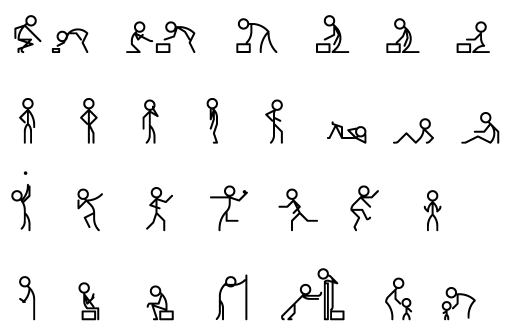

Illustrations - Simple Stick Figures
In this short course, we’ll learn about illustrating humans using
Stick Figures
Learning Objectives
Learning Objective 1: Standing Figures
Learning Objective 2: Sleeping Figures
Learning Objective 3: Sitting Figures
